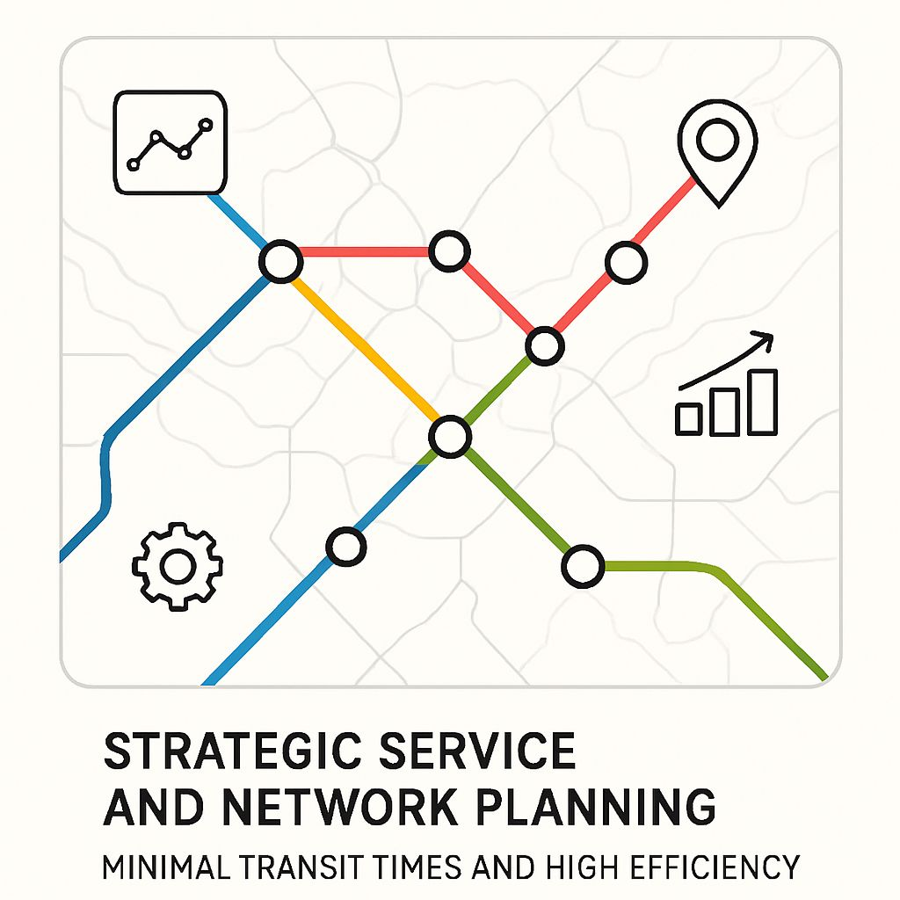
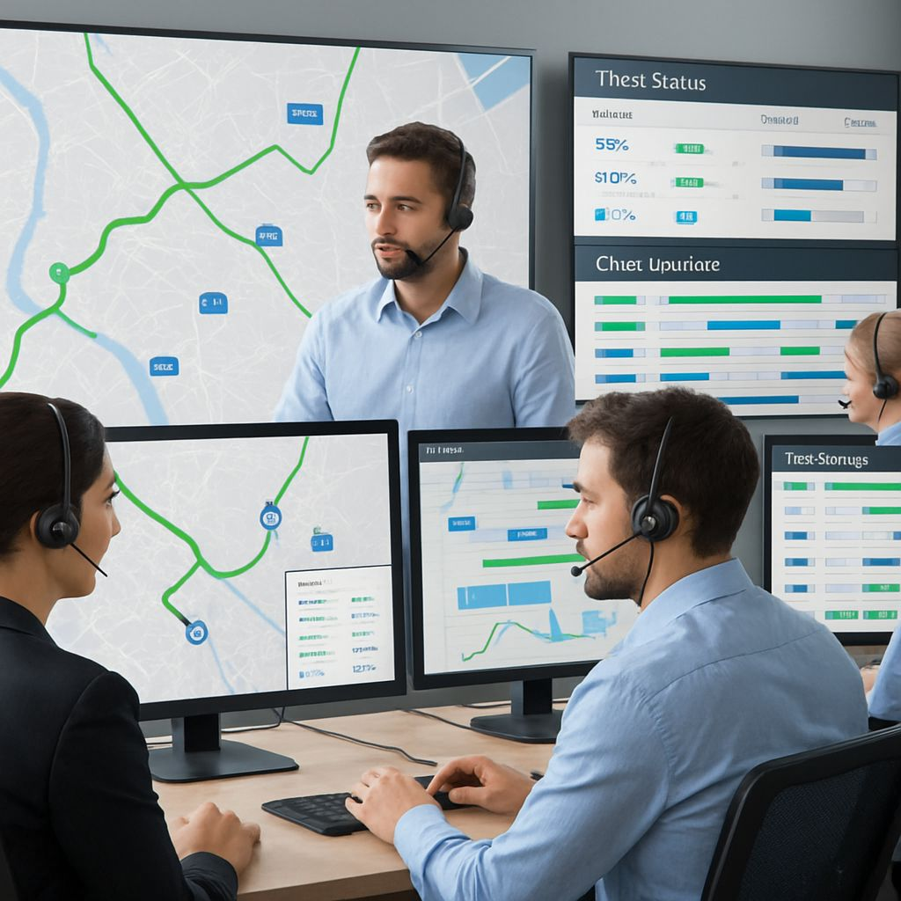
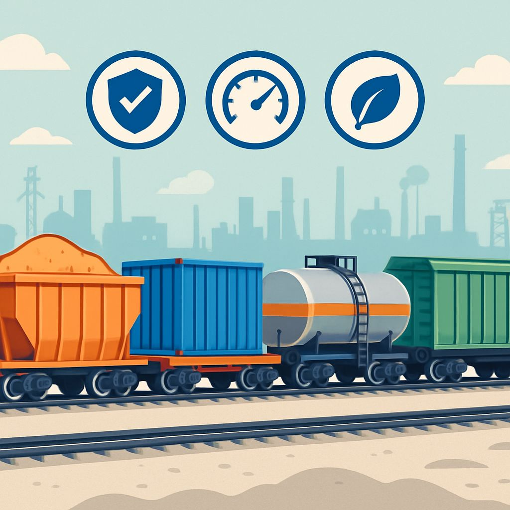
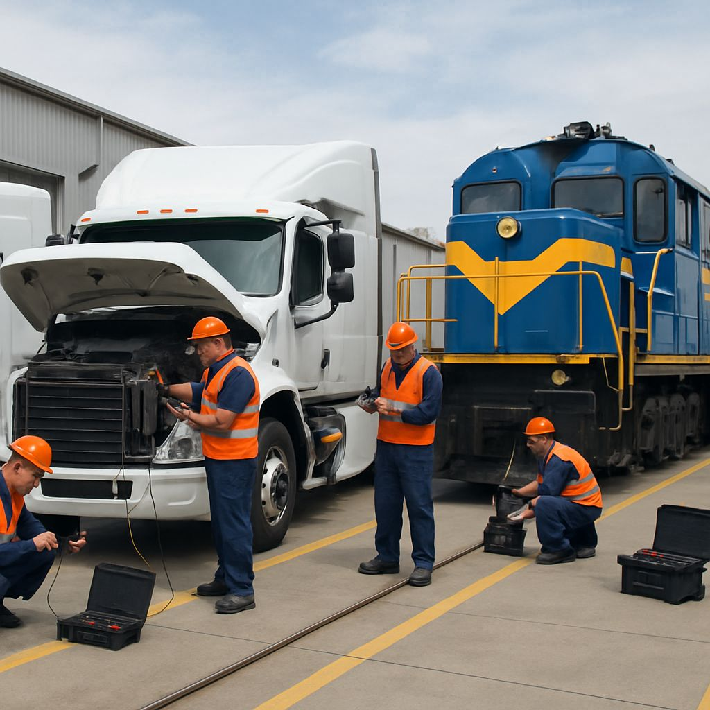
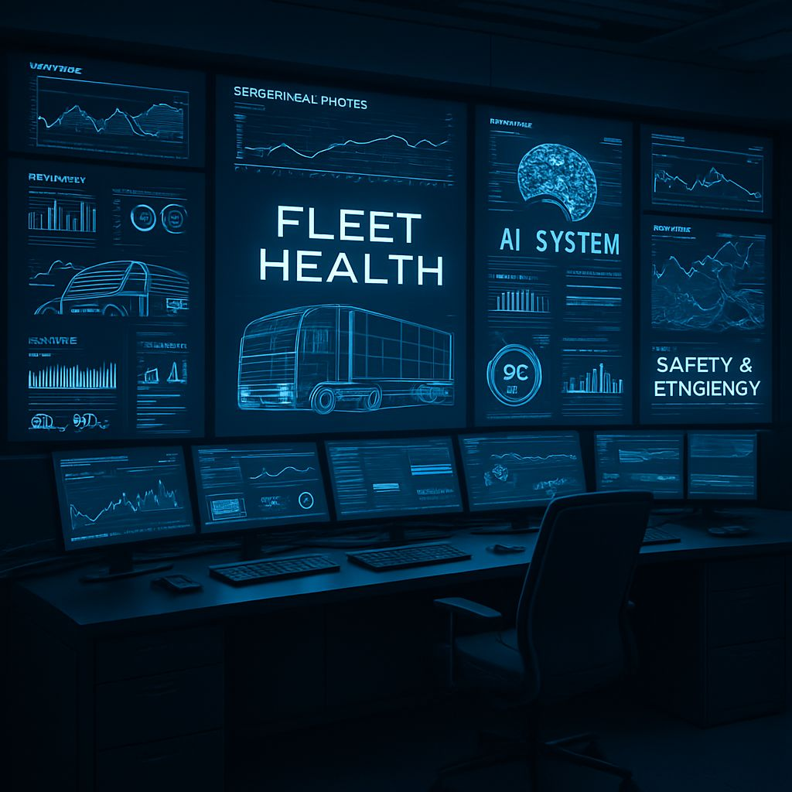
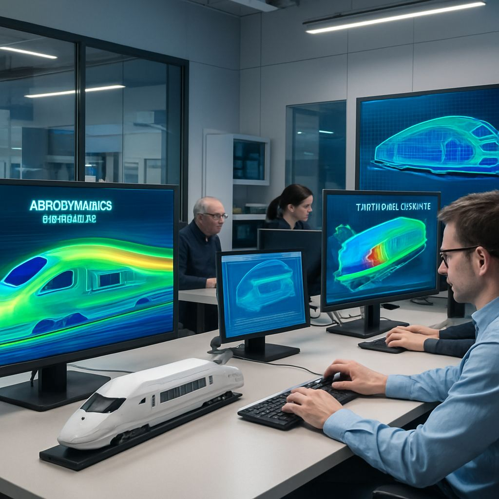

Moving Germany’s Goods with Precision & Efficiency
Company Overview
3DS Rail Dynamics is a leading Germany-based rail freight company, dedicated to optimizing transportation logistics and delivering reliable, cost-effective freight solutions...
Our Core Operations

Service & Network Planning
We strategically plan routes to minimize transit times and costs...

Fleet & Crew Management
Our dispatching systems and predictive scheduling ensure minimal idle time...

Diverse Cargo Capability
We transport bulk materials, intermodal containers, and specialized freight...
Expansive Infrastructure
Five state-of-the-art rail yards across Germany.
Three yards feature full-service maintenance facilities.
Scalable infrastructure to support future growth.
Advanced cargo handling systems reduce turnaround time.
Automated equipment and digital tracking systems improve transparency and efficiency.
Maintenance & Engineering Excellence

Preventive Maintenance
We implement scheduled checks and mobile repair teams...

Digital Diagnostics
AI-powered systems predict and prevent failures by analyzing real-time data...

Engineering Innovation
Using multiphysics simulations, we optimize aerodynamics and structural integrity...
The Power of Innovation
AI-driven route optimization reduces delays and fuel use.
Simulations guide aerodynamic and structural design improvements.
Predictive analytics ensures timely and cost-effective maintenance.
Digital platforms offer real-time monitoring and decision-making.
Sustainability & Efficiency
Hybrid and regenerative braking-equipped locomotives.
Use of alternative fuels including biodiesel and hydrogen.
Smart infrastructure with automated switching and digital asset tracking.
Participation in electrified freight corridor initiatives to reduce emissions.
Partner with 3DS Rail Dynamics
Join us in revolutionizing Germany’s rail freight logistics...